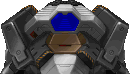
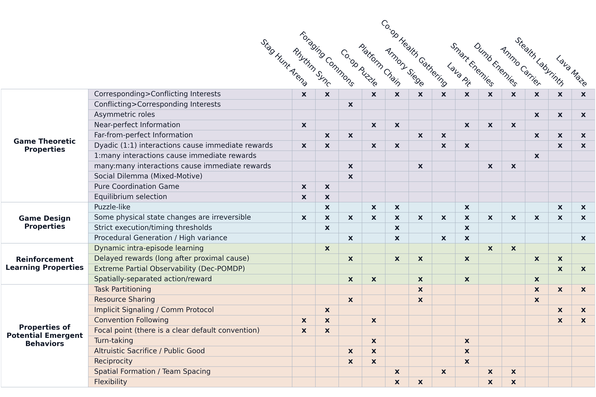
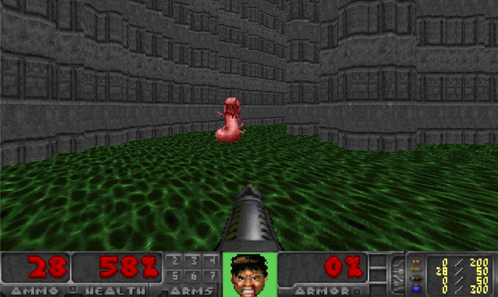
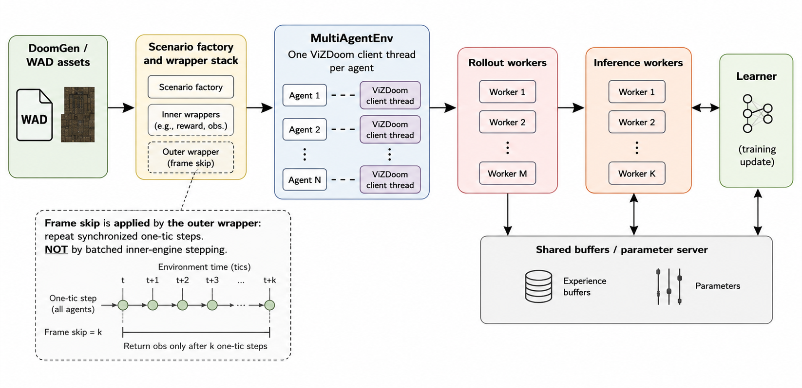
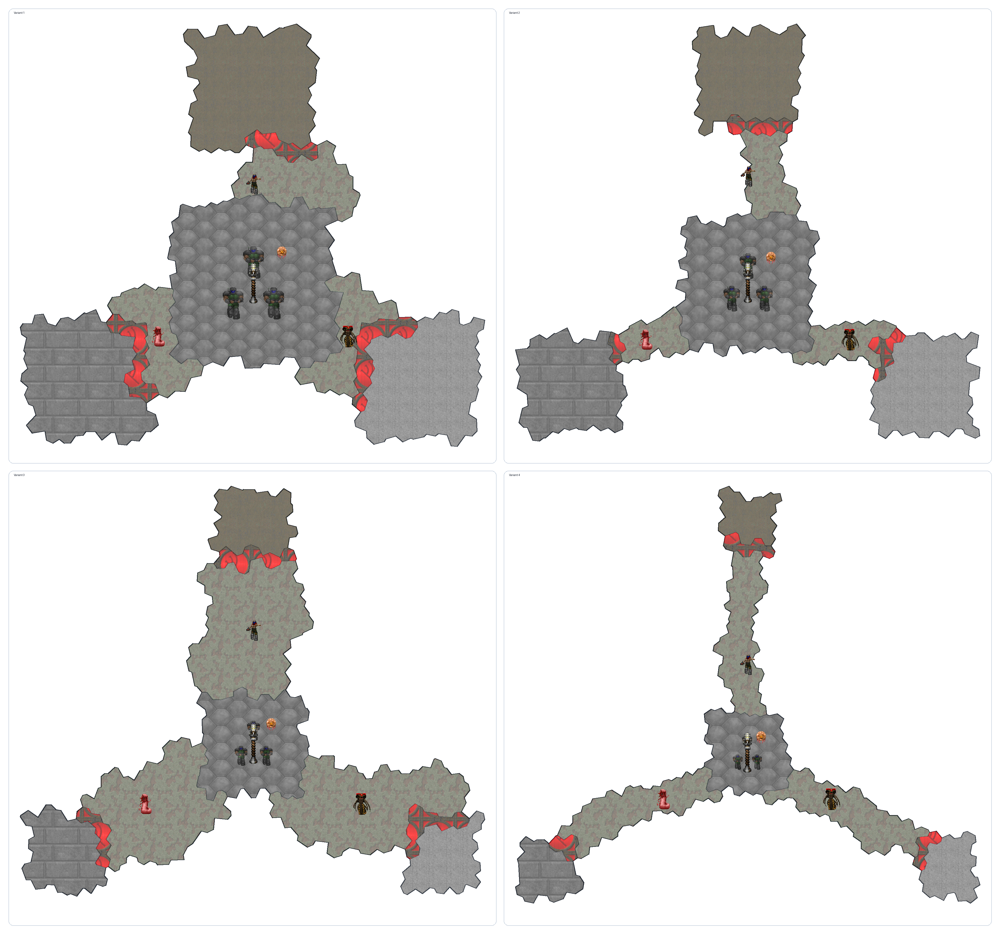
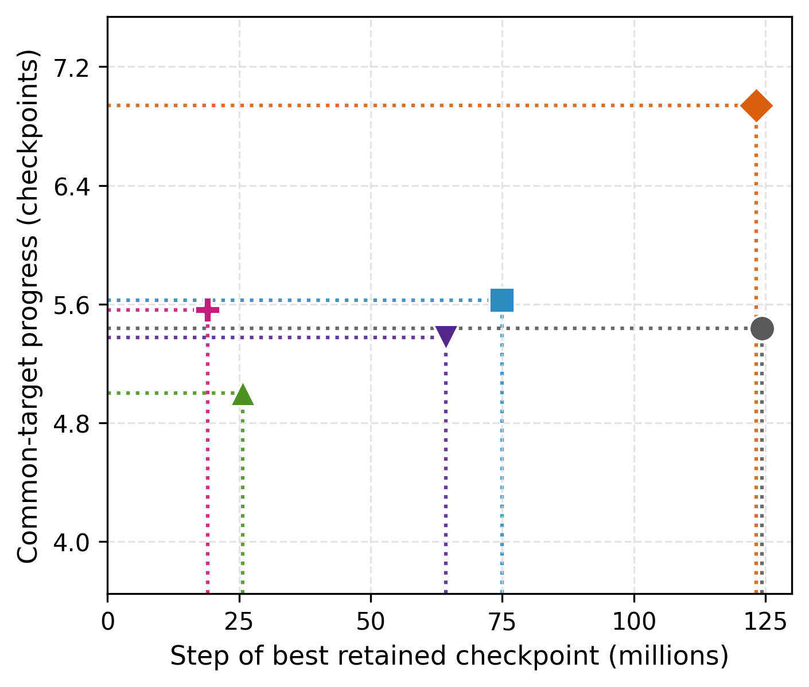
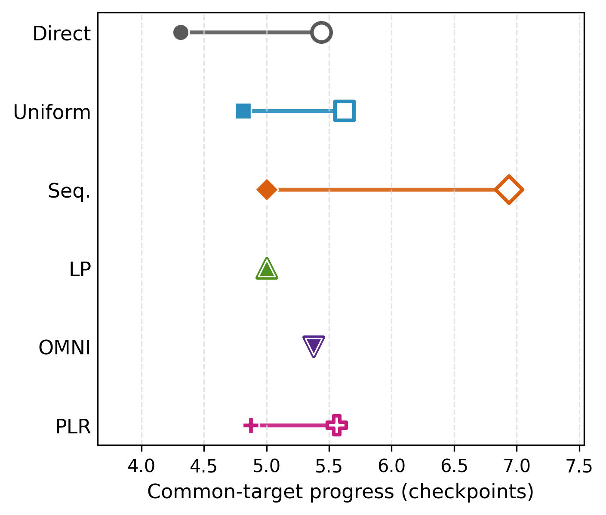
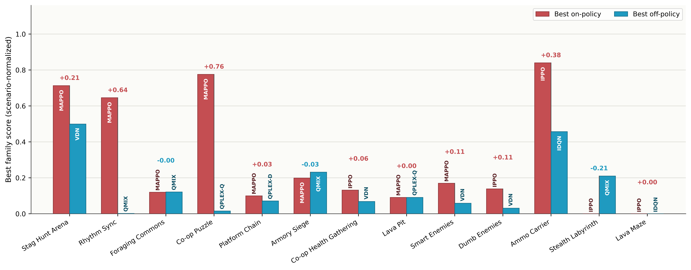

Abstract
To address this gap, we introduce COMRAD, a COoperative Multi-Agent Reinforcement LeArning benchmark suite in Doom, featuring a diverse set of challenging scenarios spanning role asymmetry, temporal synchronization, and spatial navigation.
To introduce within-scenario variability, we develop DoomGen, a procedural map generator that produces diverse layout configurations for every scenario. We integrate COMRAD with Sample Factory, a high-throughput asynchronous RL framework, and implement seven MARL baselines on top of it, reaching ~25K frames per second during training. Our experiments show that COMRAD poses significant challenges for current CTDE methods, establishing visual cooperative MARL as an important open frontier.
What We Introduce

13 Cooperative Scenarios
Agents coordinate solely from their local 3D first-person visual observations: no shared state, no explicit communication.


Difficult · D5Methodology
High-throughput infrastructure, procedural generation, and curriculum learning form the backbone of COMRAD.



To make spatial memorization as difficult as possible, DoomGen avoids traditional orthogonal, grid-based room layouts. It constructs maps starting from a relaxed Voronoi tessellation, grouping irregular cells into semantically defined areas before translating the graph into valid Doom geometry.
This geometric irregularity broadens the distribution of boundary shapes, sightlines, and local visual cues, exposing algorithms to a distribution of spatial configurations rather than a single memorizable map.


Results
Performance of 7 established CTDE baselines across all 13 COMRAD scenarios under a 100M-step training budget.


Agent Trajectory Heatmaps
Visualizing spatial coordination and division of labor between agents in the Ammo Carrier scenario.
Why IPPO Outperforms HAPPO on Ammo Carrier
Objective: Ammo Carrier is a fixed-role asymmetric defense task. One immobilized defender holds the hub against enemies, while a mobile runner maintains a depot-to-hub resupply loop. The challenge lies in learning a stable, long-horizon logistics routine with delayed, role-specific payoffs.
IPPO (Left): Decentralized updates allow the runner to independently optimize its loop without cross-agent interference. IPPO concentrates movement along a recurring depot-to-hub corridor, successfully learning the required role-specialized logistics behavior.
HAPPO (Right): Centralized training creates counterproductive coordination pressure. The runner's gradient updates are influenced by the defender's value signal, causing it to abandon the logistics routine. This lead to episodic ammo starvation and significantly lower survival times.
Citation
@inproceedings{nguyen2026comrad,
title={{COMRAD}: A Benchmark for Embodied Cooperative Multi-Agent Reinforcement Learning},
author={Khoi H.B. Nguyen and Dimitar Zhivkov Zhekov and Tristan Tomilin},
booktitle={New Frontiers in Game-Theoretic Learning - NExT-Game},
year={2026},
url={https://openreview.net/forum?id=bXau6dlyV4}
}